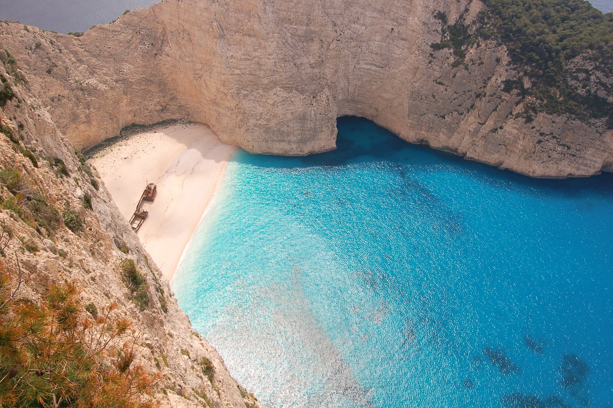

Dobrodošli u Istraži Globus – mesto gde se vaša ljubav prema putovanjima pretvara u nezaboravne avanture. Mi smo tim entuzijasta, istraživača i zaljubljenika u svet, posvećenih tome da vam pružimo najinspirativnije priče, najpraktičnije savete i najlepše fotografije koje će vas podstaći da krenete na put.
Naša Misija: Inspiracija i Otkriće
Naša misija je jednostavna: želimo da vam otvorimo oči ka neograničenim lepotama i čudima našeg globusa. Verujemo da putovanja nisu samo odlazak od kuće, već putovanje ka samootkrivanju, razumevanju različitih kultura i stvaranju uspomena koje traju čitav život. Kroz naše članke, vodiče i fotografije, trudimo se da oživimo svaku destinaciju i prenesemo vam njenu suštinu, bilo da je reč o mirnim planinskim vrhovima ili užurbanim gradskim ulicama.
Naša Priča: Sa Vama na Svakom Koraku
Istraži Globus je nastao iz strasti da delimo iskustva i znanje. Svaki član našeg tima donosi jedinstvenu perspektivu, bilo da je reč o detaljnom planiranju putovanja, pronalaženju skrivenih dragulja ili razumevanju lokalne kulture. Konstantno istražujemo, učimo i prilagođavamo se, kako bismo bili sigurni da su informacije koje dobijate relevantne, tačne i inspirativne.
Nismo samo pisci, mi smo i putnici, baš kao i vi. Svaki članak je prožet našim ličnim iskustvima, izazovima i radostima koje smo doživeli na putu. Želimo da osetite autentičnost svake priče i da se povežete sa destinacijama na dublji način.
Šta Možete Očekivati?
- Detaljne Vodiče: Od praktičnih saveta za pakovanje do budžetiranja putovanja.
- Inspirativne Priče: Avanture koje će vas naterati da sanjate o novim horizontima.
- Zapanjujuće Fotografije: Vizuelno putovanje koje dopunjuje svaku reč.
- Kulturni Uvid: Razumevanje lokalnih običaja i tradicija.

Pridružite nam se na putovanju! Neka Istraži Globus bude vaš kompas u svetu avanture. Hvala vam što ste deo naše zajednice.